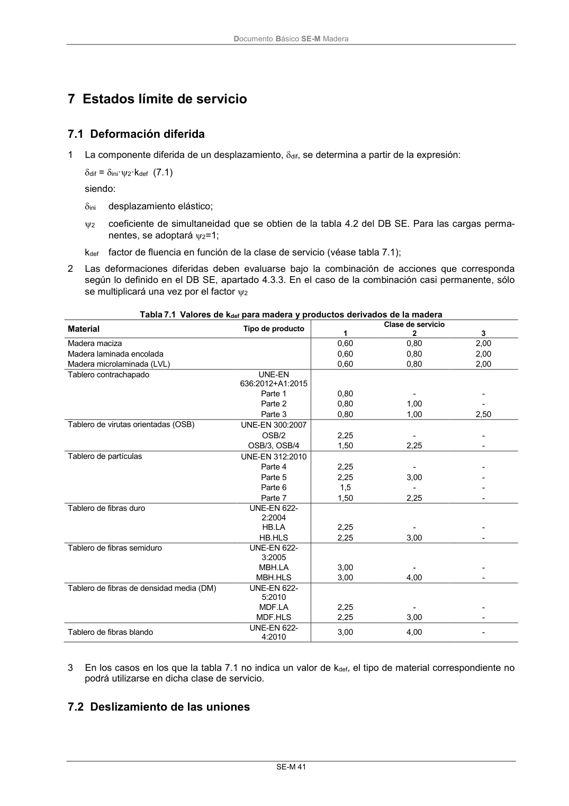

DB-SE-M · 7 Estados límite de servicio · 7.1 Deformación diferida · 1 La componente diferida de un desplazamiento, dif, se determina a partir de la expresión: · 7.2 Deslizamiento de las uniones · versión 2019-12-20
SHA256: 26b5819839ebfda78b0b119c5e76a0a37773b0d763c05688541870075df93718 · página física 47 de 132 · métodos de encabezado
solo si están cotejados.
Formatos: Markdown · JSON de bloques · PDF p. 47 · imagen PNG
Documento Básico SE-M Madera SE-M 41 7 Estados límite de servicio 7.1 Deformación diferida 1 La componente diferida de un desplazamiento, dif, se determina a partir de la expresión: dif = ini·2·kdef (7.1) siendo: ini desplazamiento elástico; 2 coeficiente de simultaneidad que se obtien de la tabla 4.2 del DB SE. Para las cargas perma- nentes, se adoptará 2=1; kdef factor de fluencia en función de la clase de servicio (véase tabla 7.1); 2 Las deformaciones diferidas deben evaluarse bajo la combinación de acciones que corresponda según lo definido en el DB SE, apartado 4.3.3. En el caso de la combinación casi permanente, sólo se multiplicará una vez por el factor 2 Tabla 7.1 Valores de kdef para madera y productos derivados de la madera Material Tipo de producto Clase de servicio 1 2 3 Madera maciza 0,60 0,80 2,00 Madera laminada encolada 0,60 0,80 2,00 Madera microlaminada (LVL) 0,60 0,80 2,00 Tablero contrachapado UNE-EN 636:2012+A1:2015 Parte 1 0,80 - - Parte 2 0,80 1,00 - Parte 3 0,80 1,00 2,50 Tablero de virutas orientadas (OSB) UNE-EN 300:2007 OSB/2 2,25 - - OSB/3, OSB/4 1,50 2,25 - Tablero de partículas UNE-EN 312:2010 Parte 4 2,25 - - Parte 5 2,25 3,00 - Parte 6 1,5 - - Parte 7 1,50 2,25 - Tablero de fibras duro UNE-EN 622- 2:2004 HB.LA 2,25 - - HB.HLS 2,25 3,00 - Tablero de fibras semiduro UNE-EN 622- 3:2005 MBH.LA 3,00 - - MBH.HLS 3,00 4,00 - Tablero de fibras de densidad media (DM) UNE-EN 622- 5:2010 MDF.LA 2,25 - - MDF.HLS 2,25 3,00 - Tablero de fibras blando UNE-EN 622- 4:2010 3,00 4,00 - 3 En los casos en los que la tabla 7.1 no indica un valor de kdef, el tipo de material correspondiente no podrá utilizarse en dicha clase de servicio. 7.2 Deslizamiento de las uniones
